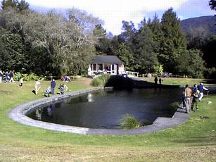
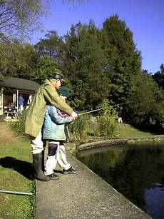
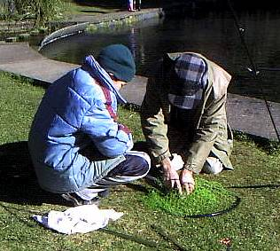
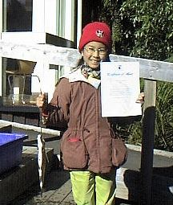
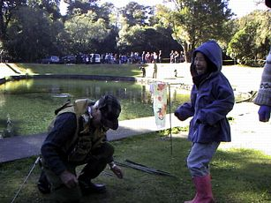
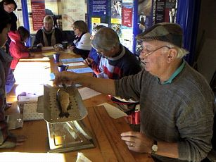
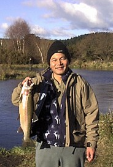

釣行日誌 ＮＺ編
ナショナルトラウトセンターのキッズ・フィッシングデー
2002/07/14(SUN)
ツランギの町はずれにあるトンガリロ・ナショナルトラウトセンターに着いたのは午前11時をちょっと回っていた。林の中の小径を抜けてキッズ・フィッシングポンドへ出ると、池の脇のベンチにはすでに田島さんちのお母さんが待っておられた。あいさつもそこそこに様子を聞くと、子供たちはすでに50分も前から並んで順番を待っているとのこと。今日は、このセンター主催の子供鱒釣りデーなのだ。
先週、田島さんから、この鱒釣りデーに参加したいので、いっしょに行ってくれませんかとお誘いがあった時から、子供たちでも振れるような短いロッドと軽いラインを巻いたリールを２セットずつ用意してきたのだがそんな心配は無用で、ツランギのベテランフィッシャーマンたちが道具を準備してくれて、子供たちに手取り足取り教えてくれるということが、お母さんの話でわかった。

予約時間の11時よりも、だいぶ前に着いた田島さん一家であったが、すでに長い列が出来ており、快晴とはいえ冷たい風の中、子供たちはじっと我慢でひたすら順番を待って立っているのだった。見ると、長さ30ｍ、幅15ｍほどの池の周囲には、なるほどベテランらしい風貌、服装をしたおじさん、おじいさんたちが８名ほど並んでおり、そこへ子供たちの行列の先頭から１人ずつ順番に配置されるというしくみらしかった。
今日の参加資格は、6歳から14歳までということであり、かなり小さい子からちょっと大人びてきた感じのティーンネージャーまで、いろいろな子供たちが、長い列の中から熱い視線を、すでに釣り始めている８組のチームに送っているのである。
この孵化場は、タウポ湖からトンガリロ川へ遡上してくる鱒を途中で捕らえ、人工的に採卵・受精を行い、育てた稚魚をタウポ周辺の漁場へ供給する役割を担っている。鱒の養殖場ではないので、親魚はすべてタウポ湖で育った野生の鱒である。このキッズ・フィッシングポンドは、まだ小さくて、本格的な釣りが楽しめない子供たちに、釣りの楽しさを体験してもらうために造られた国営の施設なのだ。池の中には、体長30～40cmほどに育ったレインボートラウトが、体をぶつけるほどの密度で泳いでいるが、日本の釣り堀と違うのは、野生魚を親に持つここのレインボーは、人影を見るとささっと逃げることである。
今朝、受付に来た子供たちは、まずフィッシングライセンスを買うことになる。これは、大人がタウポ湖で釣りをするために買うラインセンスとまったく同じものであり、子供料金３ドル（約180円）という価格だけが違っている。ちなみに大人の一日ライセンスは12.5ドルである。
子供の釣りとは言え、釣り方はタウポ地区のレギュレーションに則り、フライフィッシングとそこは厳格に決められているのであった。
今日は朝から快晴ということもあり、とてもにぎわっているので長い行列ができている。ライセンスを購入した子供たちは、大人しくこの列に並んで待っているのであった。
さて、良い子で待っていた甲斐があり、とうとう田島家の３兄弟、トモ君、ミホちゃん、リサちゃんにも順番が回ってきた。トモ君は池の流れ込み近くで釣っているチェックのウール帽子のおじいさんのところへ配属となり、さっそくレクチャーを受けている。
「いいかい、これがフライロッド、これがリール、ここからラインが出てその先にはこんなフライが付いているんだ。それに鱒が喰いつくんだよ。鱒が喰いついたらね、まずロッドを立てるんだ........君、聞いてる？」
すでに池の中を泳ぐ鱒たちにココロを奪われているトモ君は、おじいさんのレクチャーも右の耳から左の耳へ通り抜けてしまうのであった。
いよいよおじいさんの手ほどき、というかほとんどおじいさんがやってくれるのだけれど、キャスティングが始まり、フライが水中へ投射された。おじいさんが、ゆっくりとしたリトリーブを始める。

私は当初、インストラクターの方々はみんなインジケーターを付けて釣るのではないかと想像していたのだが、フローティングライン、もしくはシンキングラインでエッグフライか小型のウェット、ニンフをリトリーブする釣り方がほとんどであった。そちらの方が効率が良いのであろうか？
この狭い池の中に、あれだけ鱒が居れば、ほとんど入れ食いになるだろう.....という想像も外れ、なかなか鱒は釣れない。かなりの頻度でアタリはあるのだが、おじいさんたちも、子供に釣らせるのでは勝手が違うのか、なかなかストライクに持ち込めないようである。おまけに朝から２時間ほども入れ替わり立ち替わりいろいろなフライを見せられているので、鱒もスレてしまい、そう簡単にはフライを喰わない。また、こう言っては失礼であるが、同じように池の周囲で釣りをしているインストラクターの方々にも、地の利とか、腕の優劣は明確にあるらしく、次々と釣らせて子供の入れ替わりが早いおじいさんもいれば、あの手この手を繰り出してもなかなか釣らせてあげられないおじさんもいるのである。
幸い、トモ君がついたおじいさんは、今日のメンバーの中でも腕っこきのベテランらしく、さっきから見ている限りでは、子供の「回転」が一番早いので、傍観している私としては、ただ安心してカメラを構えていれば良いのであった。
ほとんどおじいさんのフトコロに抱かれるような体勢で、トモ君が恐る恐る、フライラインをリトリーブしている。ロッドティップの先に垂れ下がった焦げ茶色のシンキングラインが、ピクぴくっと弾む。
「ストライク！」
おじいさんが手伝ってくれて合わせもバッチリ決まり、トモ君の持つロッドが大きく弧を描く。おじいさんはすばやく脇へ退き、トモ君に的確な指示を与える。
「ようしそのままロッドを立てて、高く保つんだよ。今度はゆっくりラインをリールに巻き取って」
海釣りの経験が少々あるトモ君は、着実にラインを巻き取り、余裕を持ってファイトをこなしている。水中での逸走が不利と見たレインボーが、不意に跳躍を試みる。
「うわぁ～い！ 跳ねたァ！」
「Oh! Great!」
鱒は狭い池の中を、懸命に逃げ回り、何度もジャンプを魅せる。が、野生の血が濃いトンガリロのレインボーもさすがに疲れを見せ始め、とうとう水面近くまで浮いてきた。トモ君がリールをじりじりと巻いて寄せ始める。おじいさんは素早く長柄のランディングネットを手に取り、トモ君のそばによる。チームワーク良く、一瞬のタイミングで二人は鱒をネットに納める。
「やったぁ！」
「Good boy!」

ネットから芝生の上に横たえられた鱒を目前に、おじいさんがシメ方を教えてくれる。金属の頭が付いた小さめの棍棒「プリースト」で鱒を頭を鋭く殴るのである。少年と老人の心をわくわくさせた鱒はこうして今夜の食卓へのぼることとなった。おじいさんが、ススキの葉っぱを幅広くしたような「フラックス」という草の葉を折り曲げて鱒のエラに通し、持ちやすくしてくれたのが懐かしかった。
トモ君の二人の妹、ミホちゃん、リサちゃんも、順調に鱒を釣り上げ得意満面の笑顔である。


こうして釣り上げられた鱒は、展示室の前の青バケツで洗われたあと、検量所となっている展示室に持ち込まれる。

展示室では長机の前に検量担当のおじさんと、記念免状を書いてくれるおばさんが座っており、
「重さ348グラム、体長37.5センチだな」
などと検量した鱒のデータと子供の氏名を免状に書き込んでくれるのである。初めて釣り上げた大物の鱒と、青い免状を手に、田島家の３兄弟はいたって幸せな笑顔を振りまいていた。
釣りのあとはツランギに戻り、カフェでランチをごちそうになった。午後、近くの温泉に行くという田島さん一家といったん別れ、私は再びトラウトセンターに戻った。田島さんたちとの待ち合わせまでには１時間半ほどあるのだが、自分でロッドを振るよりも、子供たちの釣りをもっと見ていたかったのだ。
池に戻ると、さっきトモ君に釣らせてくれたおじいさんが、車のリヤゲートを開け、そこに腰掛けてランチを食べていた。お礼がてら挨拶をしてちょっと話を聞かせていただいた。
チェック柄のウール帽子をかぶったおじいさん、ジョーンズさんの話では、彼がこのトラウトセンターでの釣り大会にボランティアとして参加するようになってから１年半ほどになるそうである。子供たちは、学校の行事として、あるいは家族連れで、遠くはオークランドやウェリントンからやって来て、１年に35～40日ほど、こうしたフィッシングデーが設けられているそうだ。ジョーンズさんの自慢は、これまでに参加してもらったすべての子供たちに、最低１尾は釣り上げてもうらうことに成功したことである。ちなみに、普通ならこの池のバグリミット（釣り上げて良い魚の尾数制限）は、３尾なのだそうだが、今日は参加者が大勢だったために１尾のみに減らされたということであった。後学のために、今日ジョーンズさんが使っているフライは小さなフェザントテールということだった。（笑）
ランチを済ませたジョーンズさんは再び戦列に戻り、次から次へと新しい子供に丁寧に釣りを教えている。真冬にしては珍しい快晴の午後、日だまりの中、大木の幹にもたれながら子供たちと老人たちの釣りを眺めた。
小さな男の子が、鱒に引きずられてよたよたと危うい足取りでこらえる。お孫さんの順番を、ビデオカメラを構えておばあさんが待っている。釣り上げた鱒といっしょにお子さんがお父さんと写真に撮る。池のあちらこちらからは、水しぶきと子供たちの歓声が上がり、トンガリロトラウトセンターは微笑ましい熱気に包まれていた。
この池は、この施設は、一国の国民の税金で造られ、運用されるものとしては、最も「まっとうな」部類に入るものではないだろうか？
午後２時半に、再び田島さん一家と合流し、タウポ湖に流れ込む支流を目指す。「大人の」釣りが見てみたいというみなさんのご期待にこたえて、あわよくば１尾大物レインボーを釣ろうという目論見である。
国道にすぐ近い、とある支流の河口に着くと、トラウトセンターの森に囲まれたフィッシングポンドとはうって変わった強風で、タウポの湖面は白い波頭が砕けまくっている。トンガリロ仕様のでかいインジケーターと重いニンフを投げようと試みるのだが、いかにも風が強すぎる。これでは釣れる気がしないし、こんなみじめな状態のところを田島さん一家に見てもらうのも恥ずかしくなってきた。これじゃあ無理なので、もう帰りませんか？ と言おうと思って田島さん一家を見ると、子供たちを先頭に河畔の散策道をどんどんと上流へ向かって歩いている。後を追うために急いで国道を渡ると、昨日革ジャンのおじさんが１尾上げていたポイントが目に入った。対岸で見物している田島さんたちに、
「ここでちょっと釣りますから、どうぞ散歩してきてください！」
と呼びかけ、ニンフを振り込む支度をする。あれほど強かった風も、国道の橋がちょうど風よけとなり、ちょうどいい追い風である。キャストの向きも、上手い具合に左利き向きである。まぁ、めったに釣れないから、田島さんたちが散歩に飽きて帰ってきたらオレも帰ることにしよう.....と、やや気の抜けたキャストを数回繰り返していると、ある筋をマーカーが通るときに、ぴくんとアタリが出た。
「なんだったのかな？ 今のは？」
もう一度、その筋にニンフを流すと、オレンジ色のインジケーターが、増水気味の笹濁りの流れにフッと引き込まれた。
「！？」
と思ってロッドを立てると、ゴンゴンゴンゴンと重い手応えが伝わってくる。水に突き立ったリーダーがぐいぐいと上流へ動いてゆく。
「うわっ！ 喰いついた！」
対岸では、田島さん一家が、こちらの異変に気づき、相次いで歓声を上げている。
「おーい！ 釣れたのかぁ？」
「おじさーん！ 魚喰いついてるのー？」
ギャラリー総数＝田島さん一家５名＋地元の少年たち３名＋下流で釣ってるおじさんたち４名という、普段では考えられないシチュエーションにちょっと感動し、だいぶ緊張しつつ、ファイトが始まる。上流へは動けないし、下流へ下られたら低い橋桁をかわさなければならない。おまけに魚は昨日の１尾よりもはるかに大きい。何にもまして、今日はウェイダーを履いておらず、スニーカーなのだ。まさか釣れるなんて思わなかったし。
ゴンゴンと引くレインボーの赤い頬が見える。橋桁の真下で鱒が跳ねる。これ以上下流に行かれると、ロッドを寝かさない限り通り抜けられない。なんとか鱒を上流側へ誘導し取り込みの体勢に入る。しかし、ここの水辺は切り立っており、草地からすとんと深くなっている。ネットなしで引きずり上げられる場所ではない。ようやく大人しくなった来た鱒を見て、ハンドランディングに決めた。
鱒の頭を岸側に寄せる。鱒が抵抗して草の根に頭を突っ込む。苦心して再び頭を水面に出し、岸辺の草に寄せる。エラに指を入れぐっと持ち上げた瞬間リーダーが切れ、鱒の体がどすんと草地に落ちた。
『やったぁ！』
田島さん一家が駆け足で散策道を戻ってきた。
「おじちゃんが釣った釣ったぁー」
「おお、大きいねぇ！」
「うわぁ、すっごぉーい！」
「本当に釣れるのねぇ！」
「私のより大き～い！」
こんな大勢のギャラリーの歓声の中で、よくも釣り上げられたものだと肩で息をつく。上流から降りてきた地元の少年が、
「いい鱒だねぇ！」
と声をかけてくれた。謙遜しつつ、
「今日はツイてたよ！」
と返すと、
「違うね、スキルだと思うよ」
と言ってくれた。言うこと知ってるじゃないか、若いの！
近年まれにみる幸せなな一日となり、田島家の子供たち３人をしのぐ笑顔になってしまった。カメラは正直である。

釣行日誌ＮＺ編 目次へ
サイトマップ
ホームへ
お問い合わせ